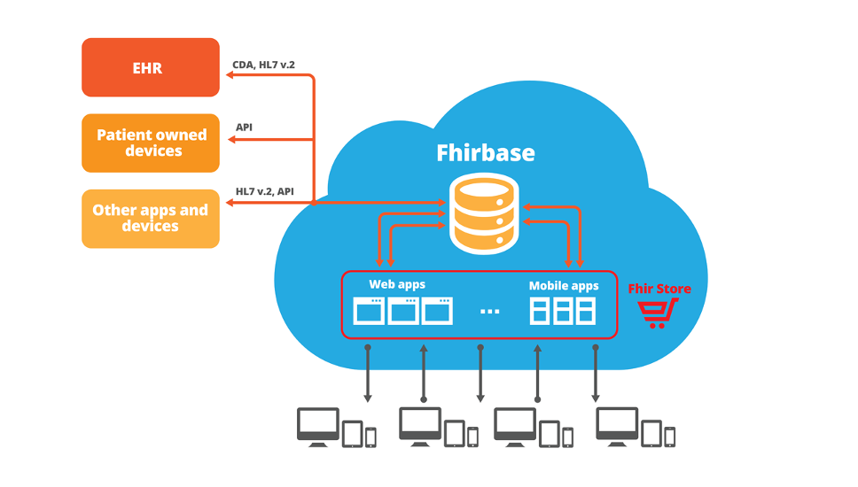

Pavel Smirnov
PM with Health Samurai
PM with Health Samurai
Healthcare IT team within WaveAccess
(818)731-1279
Health Samurai
looking for simplicity in a complex domain
Health Samurai offer
- solve your interoperability problems
- substitute a poor module within your EHR system with a modern app you will love
- create an application targeting a community or a large patient population which will supplement EHR systems from different vendors
Solve your interoperability problems
- Challenge: ACO (Accountable Care Organization) uniting several healthcare institutions with EHRs from different vendors, other apps and patient owned devices gathering data for physicians
- Solution: Health Samurai will gather all the data into a centralized FHIR server and build modern web and mobile applications serving user needs on top of it
Substitute an EHR module
- Challenge: The hospital is not happy with a specific module within the large EHR it has implemented. Customization of this EHR is limited
- Solution: Health Samurai will gather relevant clinical data into the FHIR server. Health Samurai will develop a modern web application substituting that module which will run from the EHR allowing clinical staff to switch seamlessly into the new application and back. Documents created within the new web application will be synchronized with the EHR database
Health Samurai solution
Modern web and mobile applications built on top of the centralized FHIR server
Create an application targeting a large market
- Challenge #1: A biopharmaceutical company wants to provide physicians from multiple hospitals with the CDS application supporting its medications
- Challenge #2: ACO wants to bring an advanced patient portal/engagement tools to the community with a large patient population
Why FHIR?
- offers a clinical data model from the best industry experts
- targets implementers and web technologies
- has well documented mapping with hl7 v.2 and CDA
- is getting support from major EHR vendors (Project Argonaut)
Why Health Samurai can deliver it better than others?
Expertise
Health Samurai is involved into the development of the FHIR standard and actively participates in the FHIR communityExperience
- Health Samurai has built Choice Hospital Systems MedClient - cloud based ONC certified EHR implemented in three hospitals in California: Verdugo Hills Hospital, Good Samaritan Hospital in Bakersfield and Tahoe Forest Hospital
- Implementation in Verdugo Hills Hospital has been completed by Health Samurai
- The hospitals have successfully demonstrated meaningful use and received millions of dollars in incentive payments
fhirbase
Health Samurai has already built most of key components needed for the implementation of the proposed architecture including the fhirbase - the only FHIR storage targeting large production systemsEffective development process
Health Samurai has effective development process allowing to verify all the assumptions quickly by means of research and prototyping and then iteratively develop a product solving real user needsContact Health Samurai today
(818) 731-1279